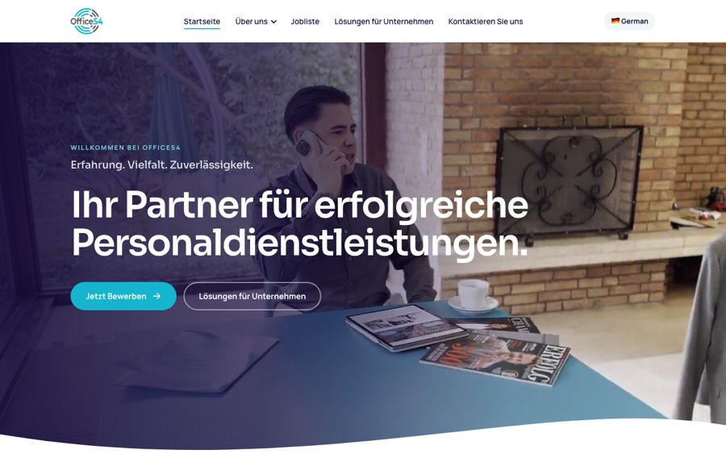
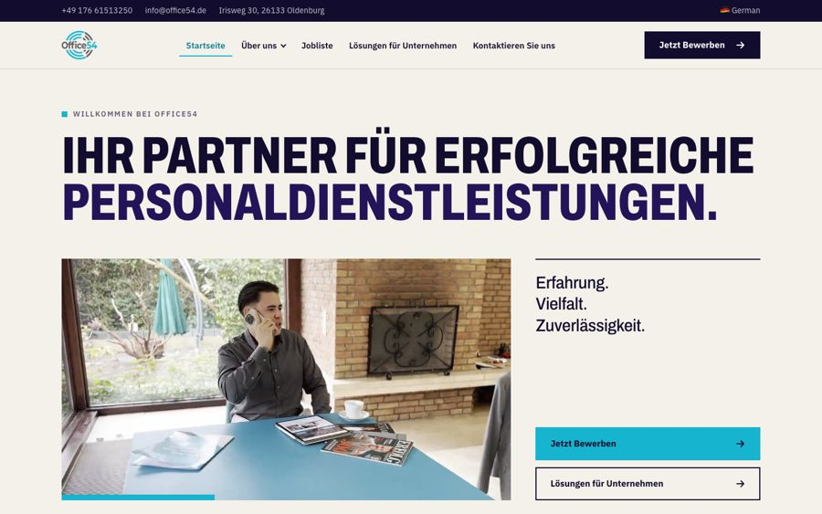
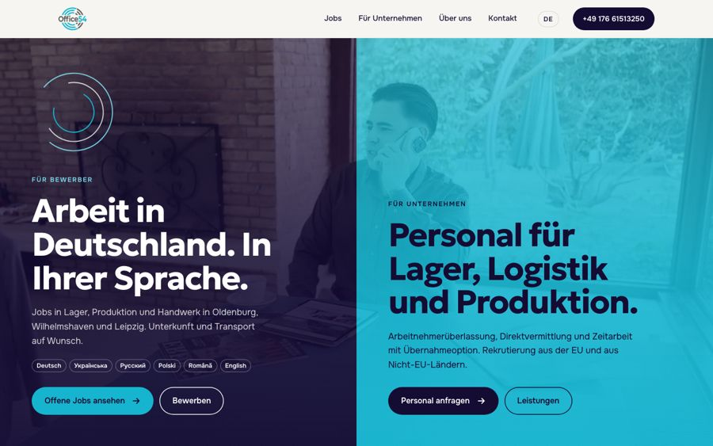
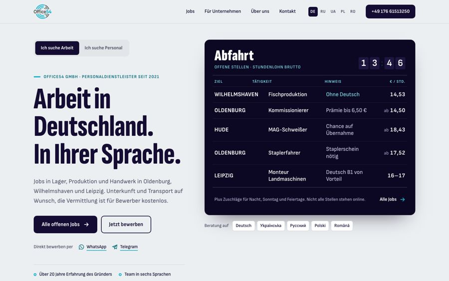

Три варианта на выбор. В каждом вверху есть переключатель DE / EN. Это предпросмотр: формы здесь отключены, в поиске страницы не появятся.

Весь сайт, 14 страниц. Тексты и структура как сейчас, новый дизайн. По меню можно ходить по всем страницам.
Открыть →
Главная в другом стиле: строже и смелее, крупные заголовки, вакансии списком.
Открыть →
Сделан с нуля. Весь сайт: главная, вакансии, для компаний, о компании, контакты. Первый экран делится на соискателей и компании.
Открыть →
Новая идея с нуля, без видео: вакансии на табло как на вокзале, путь до работы как линия метро.
Открыть →На телефоне тоже можно открыть, все варианты адаптированы.